LeapQuant：用窗口、补偿令牌与残差平滑量化线性注意力循环状态
LeapQuant研究如何压缩线性注意力的循环状态，同时避免长生成中的质量下降。它把逐词元重量化改成窗口边界量化，以高精度补偿令牌保留主要低秩结构，再平滑残差，让八位状态在所测完整模型上接近单精度基准。论文全名为 LeapQuant: Efficient Linear Attention with Accurate Recurrent State Quantization，并列第一作者 Yi Pan、Haocheng Xi 来自加州大学伯克利分校，合作机构包括华盛顿大学、MIT、Perplexity AI 和 NVIDIA。论文于2026年9月29日17:59:34 UTC公开，arXiv:2609.38166为唯一论文入口；本轮尚未核验到独立官方代码或项目链接。以下解读覆盖主文与附录，数据为论文报告结果，未独立运行模型复现。
循环状态量化虽能降低访存与显存成本，却会因舍入误差累积和状态行列离群值而显著破坏模型质量。
1. 背景和问题
混合大模型已经把许多普通注意力层替换为线性注意力层，例如门控增量网络和具有细粒度门控的增量注意力。它们把历史压缩进固定大小的矩阵状态，避免每生成一个词元都扩大所有层的键值缓存。然而，固定大小并不意味着访存便宜：每个活跃请求、每层、每个注意力头都持有一个状态；生成一步时，内核仍需从显存加载矩阵、施加衰减和秩一更新、计算读出，再把矩阵写回。一次更新的算术工作较少，搬运整块矩阵的成本却重复发生，因此瓶颈常落在显存带宽上。论文关注的是这个循环状态的存储和更新表示，不是权重量化，也不重新训练注意力结构。
从容量看，还需要区分正在生成的请求状态和前缀缓存检查点。对单个请求，状态大小不随上下文无限增长；对一个启用前缀复用的服务，系统会保存多个历史边界状态，让后来请求可以从公共前缀继续生成。如果默认每一千左右缓存词元保存一个检查点，缓存前缀总量增加仍会产生大量状态副本。因此，缩小状态同时有两种潜在收益：每一步少搬数据，以及给缓存和并发留下更多容量。两者作用在不同分配对象上，不能仅用“上下文压缩”统一解释，也不能拿一个状态矩阵的压缩倍率直接宣称整机显存同比下降。
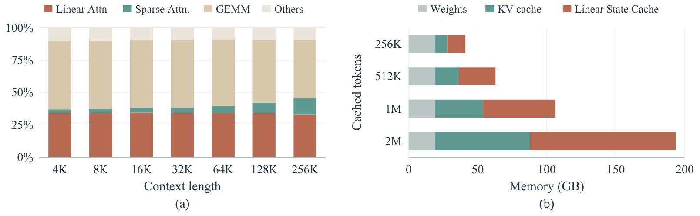
图一左侧是采用低位宽权重的闪速模型在加速卡上、批量二百五十六时的解码时间组成。横轴从四千到二十五万六千上下文，纵轴为每步时间占比；线性注意力对应的部分在不同上下文长度下大体稳定，稀疏注意力的比例随长度有所变化。这个现象支持作者选择循环状态作为优化对象：它并不会因为模型已经采用稀疏注意力、上下文处理成本受控，就自动消失。但图中的占比属于特定模型、硬件和批量，不能解释成任意混合模型都花同样比例的时间更新状态。矩阵乘法和其他组件仍然占据相当部分，所以单层注意力再快，整个模型的加速也必然受到其余计算限制。
图一右侧换成九十亿参数模型的显存构成，并假定每一千零二十四个缓存词元保留一个线性状态。横轴为显存容量，纵轴为累计缓存词元数量；从二十五万六千增长到二百万缓存词元时，权重部分基本稳定，键值缓存与循环状态检查点明显扩大。这一视角把“固定状态”与“服务缓存总容量”的区别直观展示出来：每份状态不长大，但保存的份数会增多。在这样的缓存政策下，状态量化会同时改善检查点密度和可容纳请求数。它并没有证明所有前缀都需要相同缓存间隔，也没有给出不同命中率下的最优政策。若系统只保留活跃请求的最新状态、不开启前缀缓存，右图所示的大幅容量收益就不应照搬；仍可能获得访存收益，但节省显存的构成会改变。两个面板合起来界定了论文的需求来源，同时提醒读者分别观察带宽瓶颈和缓存策略。
直接将状态改成八位或十六位，为什么比普通缓存量化更危险？普通键值缓存里，一个历史词元的键和值写入后通常不再修改，其量化误差会影响后来读取，但不会在每一新词元的写入中重新舍入同一份矩阵。循环状态则承担记忆和下次更新的输入。新状态从已经失真的旧状态出发，再经过一次舍入，旧误差与新误差一起沿衰减和擦除算子向后传播。长期推理中，上万步的小误差可能改变状态轨迹，继而改变后续输出和生成路径。因此，“当前一步的重建误差小”不足以说明“整段推理的准确率损失小”。作者的附录在固定层输入序列下推导误差递推；真正完整生成还包含层间和采样反馈，实验承担验证这一更复杂情形的职责。
第二个困难是状态的统计结构。状态里少数键通道和数值通道可能出现幅度很大的条带，它们迫使量化器选择较宽范围，从而降低大量普通元素的分辨率。仅仅减少舍入次数，可以缓解时间上的累积，却不能消除某个边界量化本身的粗糙误差。反过来，通道平滑或离群值处理即使把单次误差降低，若每步仍重新舍入，长生成仍可能受到累计影响。LeapQuant把这两个维度分开处理：按窗口量化控制误差进入频率，高精度补偿令牌保留主要低秩结构，残差平滑改善剩余矩阵的量化范围。三个设计服务于同一个推理过程，而不是把彼此无关的量化技巧叠加到网络上。
方法还借用了线性注意力训练和预填充中的分块展开思想，但使用场景变了。训练时可以一次得到一段输入，借助块内并行降低访问完整状态的次数；自回归解码时，下一个词元要等当前输出，不能把未来输入预先算好。作者因此保存已经发生的高精度更新记录，在每一步从固定的窗口起点状态和这些记录计算读出。窗口中的输出依然按顺序产生，省掉的是中间稠密矩阵反复量化和写回。所谓“跨越窗口”并非跳过词元计算，更不意味着一口气预测十六个词元。
这篇论文值得关注的判断范围也很明确。它给出了无需训练和校准数据的状态表示，以及三个完整模型上的精度证据；八位配置最有说服力。其系统实验同时包含单层内核、模型纯解码和离线端到端吞吐，需要分别理解。两个更新的大型闪速模型由于资源限制只保留八层，用于效率测量，不具备原始完整模型的输出能力。这些结果可以说明每层成本和长上下文趋势，不能替代完整模型精度，也不能直接替代生产服务的在线延迟评估。
2. 方法
2.1 预备形式与按窗口量化
论文先用统一的“对角衰减加秩一增量规则”表示每个头的循环更新，再改变状态的物化和量化时机。原文公式一为：
符号解释：$S_t\in\mathbb R^{d_k\times d_v}$ 是当前状态，$q_t,k_t,\beta_t\in\mathbb R^{d_k}$ 分别为查询、写入键和读向量，$v_t,o_t\in\mathbb R^{d_v}$ 为值和输出，$\alpha_t$ 控制键行的对角衰减。这里的 $\beta_t$ 是通用读向量，不能与具体增量网络里的标量步长混为一谈；附录把具体模型的标量步长吸收到写入键。没有增量规则时读向量为零。门控增量网络采用标量衰减，细粒度门控模型采用逐键通道衰减；二者都能写成这种形式。擦除方向不同的模型则可能需要一个词元拆成两次秩一子更新，缓冲成本相应变化。 为了理解每步量化的损伤，附录公式八在固定层输入序列、两条轨迹使用同一组更新系数时给出：
符号解释：$D_t=\operatorname{Diag}(\alpha_t)$，$E_t$ 是反量化状态相对独立全精度参考状态的偏差，$\varepsilon_t$ 是这一时刻新注入的舍入误差。第一项传播旧偏差，第二项对应增量擦除对偏差的作用，第三项增加量化扰动。该推导没有把模型输入变化当作零成本，前提是两轨迹共享固定更新系数；完整自由生成的后续系数可能不同。原文强调，更新幅度相对状态通常较小，反复舍入容易持续丢弃小更新，其误差会相关地累积，不能默认每次误差独立、互相抵消。 按窗口方法先计算校正向量，再缓冲这一真实更新的三个组成量。对应公式三、四：
符号解释：$u_i\in\mathbb R^{d_v}$ 是已经用之前状态读出的校正值，$i$ 为当前窗口内的词元索引。记录保存 $(\alpha_i,k_i,u_i)$，而不是仅保存原始 $v_i$；因为增量规则中的擦除依赖旧状态，后续重建必须复用已经实际计算过的校正。记录采用更高精度，窗口起点状态固定为量化表示。
符号解释：$p$ 为窗口长度，$\hat S_0$ 为起点量化状态且在算术中隐含反量化，$\Gamma_{a:b}=D_bD_{b-1}\cdots D_a$ 为累计对角衰减，空区间取单位矩阵；$\operatorname{quant}_b$ 表示带尺度元数据的位宽为 $b$ 的量化器。每条历史记录按其写入之后发生的衰减传播到当前时刻。只有窗口末尾才重建完整状态并量化，下一窗口把新边界作为起点。因此量化次数减少到原来的约十六分之一，但推理输出并未减少。
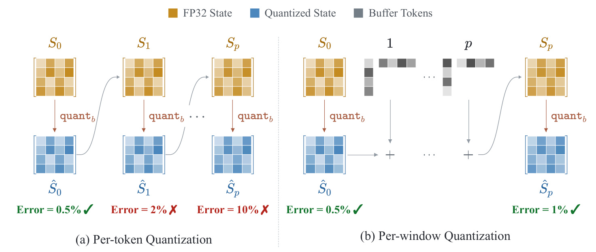
图二左边展示朴素做法：黄色全精度状态每生成一步都转为蓝色低精度状态，下一次更新又从蓝色状态出发。图中的百分比是示意误差，不是某个下游基准的准确率；它表达误差沿连续更新增大的机制。右边始终保留开始时的蓝色边界状态，在灰色记录中保存窗口内已经发生的高精度更新，到结束才组合成黄色完整状态并再次量化。这种表示使小更新能够先在高精度记录里累积，再共同进入边界舍入，减少每个小增量单独被截断的机会。读图时应注意灰色记录仍然参与每个当前输出，并非把窗口内的计算延迟到最后。如果省略它们，中间词元得到的状态就会停留在窗口开头，模型语义已经发生变化。 窗口展开还要求完整处理衰减。图中的加号是结构示意，实际公式里的每条记录都乘上适当的累计门控；当门控逐通道变化时，不能把若干外积简单相加。窗口内的校正读出也要同时访问边界矩阵和此前记录，否则擦除向量不再对应真实轨迹。作者在九十亿参数模型、六万四千词元的长文本上报告，十六词元窗口把十六位状态误差降低约一百倍、整数八位约三十九倍，说明收益不仅是少做十六次舍入这一计数变化；相关的小增量损失得到缓解。与此同时，缓冲越长，当前一步需要读取的记录越多，共享存储资源也越紧，因此窗口不能无限扩大。这幅图解释的是表示和舍入路径的变化，其最终配置仍必须由后面的速度与准确率消融选择。
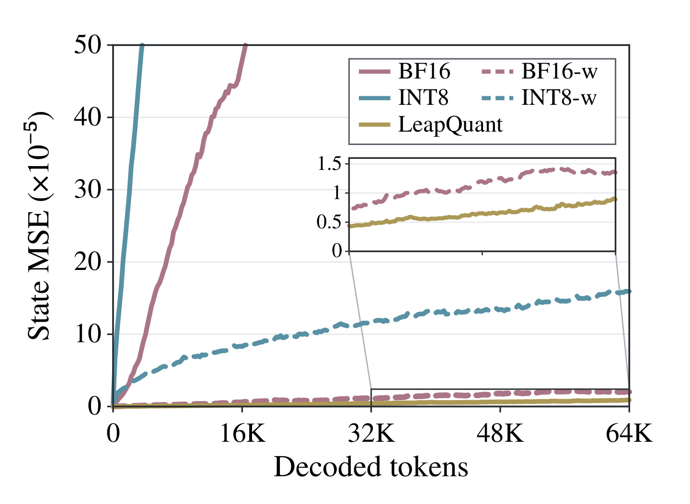
图三在九十亿参数模型上追踪长文本六万四千个解码词元，纵轴是量化状态与独立单精度轨迹之间的均方误差，横轴是已经生成的词元数量。逐词元十六位和逐词元整数八位的误差随生成持续增长；采用窗口的两种变体则明显更低，完整LeapQuant在整个区间保持最低水平。这里比较的是状态轨迹而非答案正确率，所以它提供方法机制的直接诊断，不能代替下游任务表。图内放大的小坐标区域帮助辨认低误差曲线，避免主坐标中大幅退化的变体压扁所有较好方法。数值单位同样不能忽略，均方误差的绝对值需要在给定状态尺度与模型设置中理解，并不天然存在一个跨模型有效的及格线。 作者报告到最长区间时，窗口十六位相对逐步十六位误差降低约一百倍，窗口整数八位相对逐步整数八位降低约三十九倍；完整方法甚至低于窗口十六位，尽管其残差只使用八位。这说明同时控制注入频率和单次误差，可以胜过只提高状态存储位数。论文另试随机舍入，十六位末端误差仅下降约三倍，整数八位则发散，提示把舍入当作独立零均值噪声并不足以解决持续小更新被反复丢弃的问题。这些观察仍是所测长文本轨迹的经验结果，不构成任意输入与门控下的严格稳定性保证。图中完整方法的优势由窗口、补偿和平滑共同产生，不能仅凭这条曲线把全部收益归给某一模块。与误差递推式联读，可以看到减少非零新舍入扰动的时刻为何有效；与逐组件表联读，才能判断剩余的单次误差还需要怎样处理。因而状态误差图作为时间机制证据保留在方法中，而最终模型能力由后面的任务实验验证。 实际读出不必先物化一个稠密的中间状态。附录公式九写为：
符号解释：$t$ 为任意窗口起点，$x$ 可取当前输出查询或计算校正所需的读向量，$i$ 为窗口当前时刻。边界投影成本为 $O(d_kd_v)$，每条记录只需键侧内积和数值向量缩放，成本为 $O(d_k+d_v)$。累计衰减可增量维护。固定低位宽边界矩阵加高精度秩一记录，是窗口内保持读出语义并降低状态写回的核心。它用于推理，权重不学习，训练目标没有修改；与训练分块共享代数结构，不等于重新执行训练。
2.2 补偿令牌
窗口量化仍会遇到单次边界误差。作者观察状态的能量集中在少数奇异方向，拟合一个高精度秩一矩阵承接主要幅度，然后只量化残差。公式五为：
符号解释：$\|\cdot\|_F$ 为弗罗贝尼乌斯范数，$\tilde k\in\mathbb R^{d_k}$、$\tilde u\in\mathbb R^{d_v}$ 是补偿令牌的两个向量，$R_p$ 为残差，$\tilde S_p$ 为重新组合后的近似状态。拟合目标描述低秩逼近，实现采用幂迭代，不应理解成每个边界运行昂贵的完整奇异值分解。补偿令牌不是语言模型生成的文本，不进入词表，也不产生用户可见输出；它是一条可沿既有秩一记录路径处理的高精度状态项。 多令牌形式直接扩展为原文公式六：
符号解释：$r$ 为补偿个数，$\tilde K\in\mathbb R^{d_k\times r}$ 与 $\tilde U\in\mathbb R^{d_v\times r}$ 分别收集两侧向量，$\hat R_p$ 为量化残差。新窗口开始时，残差与补偿项共同表示初始状态，补偿项位于真实更新记录之前；窗口结束后从全部项重建状态，丢弃旧补偿，重新拟合新补偿，计算新残差。因此不是把旧离群值永远固定在辅助缓存里。
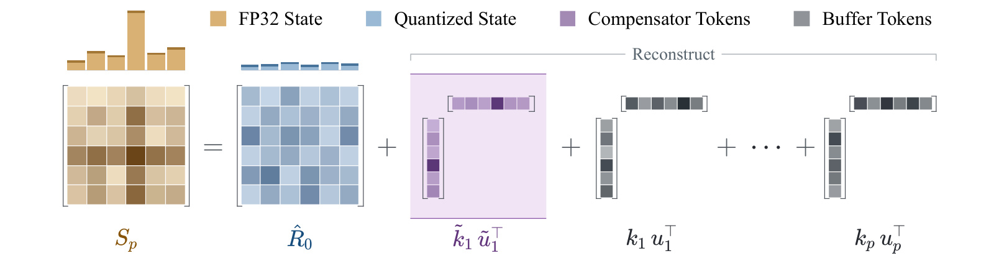
图四左侧的黄色矩阵代表需要保存的状态，上方柱形提示其不同键行幅度不均匀。右侧蓝色矩阵为量化残差，紫色部分是两个向量的外积，灰色部分是窗口内真实词元的校正记录。紫色外积把贯穿多行、多列的主要幅度结构从蓝色矩阵中拿走，使残差上方的幅度分布更均衡。这里保留的是稠密低秩模式，而不是只把几个最大元素逐点挑出；如果极端值确实集中在关联的行列方向，少量向量可以同时承接大量大幅元素。原文的奇异值能量统计支持少数方向有较大贡献，但并不保证所有模型、所有头都拥有完全一致的谱结构。 图中把紫色项与灰色项都写成外积，体现了系统设计的直接好处：读出内核已经需要处理真实更新的键向量和校正向量，可以把补偿项放进同一记录计算路径，不额外安排一个模型专属的辅助状态更新内核。补偿项在数学上携带恒等衰减作为起点记录，随后再受到当前窗口的门控传播，因此每个后续输出仍然看到“残差加补偿”的完整初始状态。低秩拟合和边界重建依然有成本；作者报告在所测设置、补偿个数不超过八时，暴露的内核开销在百分之七以内，原因是部分工作能与状态访存重叠。这个结果不能推成任意秩数都免费。真实缓冲和补偿向量都占额外空间，窗口边界也要进行重新拟合；后面的秩数消融显示过多补偿会拖慢到全精度基准以下。图四因此同时解释了准确性来源和为何这种准确性可以在现有解码结构里较经济地实现。
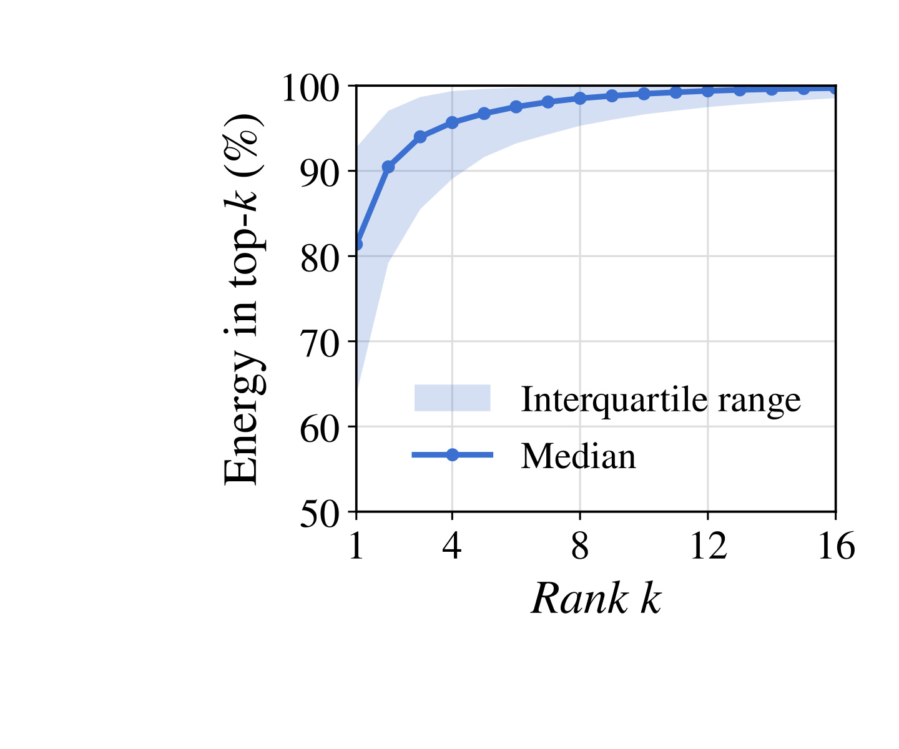
图五统计九十亿参数模型状态的前若干奇异方向累计能量，横轴是保留的秩数，纵轴为累计比例，实线为中位数、阴影为四分位区间。曲线在很小的秩数下已有较高能量占比，随后继续上升并逐渐变缓；这为使用几个补偿令牌承接主要结构提供了经验动机。如果所有方向能量都均匀，几个向量的外积就难以代表主要幅度，留下的残差仍然很难量化。该图并没有说状态本身严格等于低秩矩阵，也没有把剩余方向的能量判定为无用；这些剩余方向依然通过量化残差保留。方法的节省来自高精度只给少量主要方向，而不是把非主方向直接删除。 阴影分布同样重要。不同层、头或状态样本的能量集中程度有差异，选择相同补偿个数是在复杂度与准确性之间做整体折中，不能根据中位数推断每个头都能用四个方向取得同样重建误差。能量是矩阵近似的指标，而输出误差还与查询和擦除方向有关；一个能量不大的方向若经常被查询，也可能对任务有影响，因此主奇异方向的观察不等于最佳任务加权量化目标。作者用幂迭代拟合主结构，再在真实任务上检验恢复程度，实验和谱观察承担不同责任。后文秩数消融显示四个附近收益饱和，八个没有稳定更高准确率，十六个还暴露明显计算开销；这与曲线逐渐趋平的趋势一致，但不能仅由图五预测每个具体速度倍率。对于另一种模型，应该重新观察谱和残差分布，再测试拟合与访存能否重叠；如果谱分布更平，照搬补偿数可能失效。保留这幅图能把低秩选择的经验根据和系统代价联系起来，而避免只把“补偿令牌”理解成一个没有数据依据的表示技巧。
2.3 残差平滑
补偿后残差仍可能存在键行幅度差异。作者为每个键行计算其平均绝对值的平方根，并加入小的正下限，得到正尺度 $c$；令 $C=\operatorname{Diag}(c)$，用逆尺度左乘残差，使键行分布更平衡。尺度在窗口内不变，在下个边界重新计算。原文公式七把平滑和前两个模块组合起来：
符号解释：$R_0$ 为窗口起点残差，$\hat R_0^C$ 为平滑后的量化表示，$C$ 仅恢复残差键坐标；补偿项和真实更新已处在原始状态坐标，不再额外平滑。尺度矩阵是可逆变换，近似来自中间的量化。公式中所有起点项共同经过窗口累计衰减，而每条真实记录按写入时间经历不同衰减。忽略这个坐标和时间区分，会造成残差、补偿和更新的组合不一致。
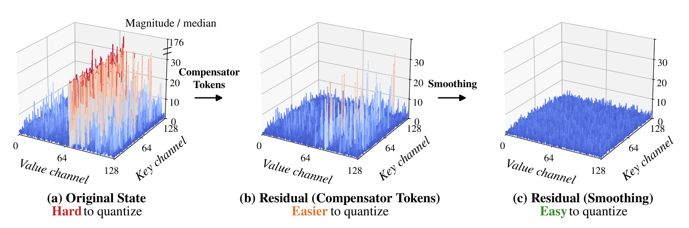
图六依次画出九十亿参数模型第十三层第十六头、八千上下文时的状态幅度。横向两轴为数值通道和键通道，高度表示归一化幅度。左边原状态有很尖的行列方向峰值，最大达到其中位数的一百七十六倍；中间扣除补偿令牌后，大部分结构明显变平，但还留下少数较大的峰值；右边再做键行平滑，幅度范围进一步收敛。这个图帮助解释为什么低秩保留和平滑并不重复：前者保留主要相关方向的真实高精度信息，后者改变剩余值的表示坐标，给普通元素更细的量化分辨率。它不是抹去离群值，也不是把所有状态归零，而是在读出时恢复坐标，并把未量化的补偿项加回来。 需要特别小心三幅图的归一化口径。原状态和补偿后的残差都按原状态的中位数归一化，而平滑残差按其自己的中位数归一化；原文报告补偿后的最大相对幅度约四十七倍，平滑后约五点三倍。这些数字可以说明各自动态范围被控制，却不能当作绝对元素幅度按一百七十六、四十七、五点三简单同比下降，更不能直接当作准确率变化。该展示只取一个注意力头和时刻，是机制案例，跨模型的准确率结论仍需要主结果表支持。中间的残余尖峰说明四个补偿项未必吸收所有异常模式，右侧的平滑也只是减轻量化难度；它并没有提供严格的最大误差上界。尺度重新计算会增加边界工作，固定窗口内尺度则避免每步重新估计与搬运一套元数据。图中的顺序由原状态到低秩残差再到平滑残差，与实现中的处理次序一致，这个次序决定了尺度应从哪一个矩阵统计，而不是直接用原状态尺度替代。 附录公式十说明统一读出如何把三个部分组合起来：
符号解释：$x$ 为任意读向量，$\ell$ 为当前窗口位置，第一项读平滑残差，第二项读补偿结构，第三项读真实更新。对角尺度与对角累计衰减在键坐标作用，补偿与更新不额外乘残差尺度。对按数值通道的对称整数八位量化，反量化本身还有数值侧尺度；附录把它放在残差投影结果侧。混用键侧平滑尺度、数值侧量化尺度和真实记录坐标，会破坏原文推导的读出等价性。工程实现应分别保存这些元数据，不能仅将完整状态拆成几块后不加区分地复用同一量化器。
3. 实验结果
3.1 完整模型精度与更低位宽
精度实验使用两个门控增量网络模型和一个细粒度门控模型，即九十亿参数稠密模型、三百五十亿参数且每步激活三十亿的混合专家模型，以及四百八十亿参数且激活三十亿的指令模型。五种任务覆盖数学推理、研究生级知识问答、多领域知识、代码生成和小学数学。主表保留四类任务，共十二个模型任务组合；附录增加小学数学并展开所有直接格式和适配方法。每个模型各方法共享提示、样本集合和官方模型卡的采样参数，准确率在三个随机种子上取平均。
两个推理模型开启思考，温度为一、核采样阈值零点九五、候选截断二十、存在惩罚一点五，最大输出八万一千九百二十。指令模型温度为一、核采样阈值一、无候选截断、存在惩罚为零、最大输出六万五千五百三十六。上下文上限设置为输出上限加八千一百九十二，以免思维链先被上下文截断。这些控制变量解释了为什么长生成误差是关键，也防止把不同生成模式的绝对分数直接解释成某种架构优劣。实现只改循环状态；混合专家等其他组件保留基准精度。默认窗口十六、四个半精度补偿令牌、单精度平滑尺度，四位配置增加到八个补偿令牌。
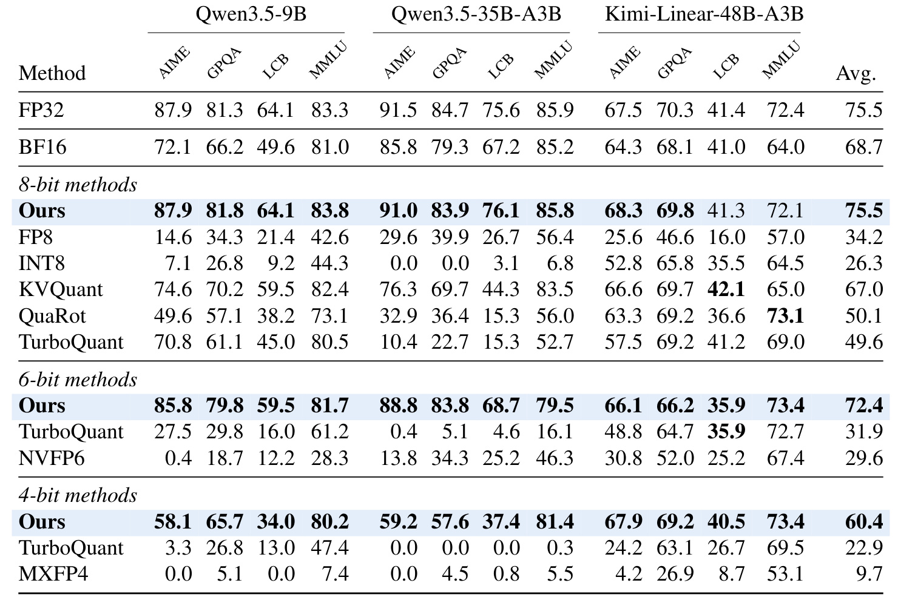
表一最强的结论是八位配置在十二组任务上的平均分与单精度基准同为百分之七十五点五。九十亿参数模型的数学竞赛与代码生成分数分别保持百分之八十七点九和六十四点一，知识问答与多领域知识略高于基准；三百五十亿参数模型个别任务略降、代码生成略升；指令模型也有小幅上下变化。这属于所测任务上接近基准的证据，而非逐样本输出完全相同。仅把状态改成十六位并逐步量化，平均分已掉到六十八点七；在九十亿参数模型上，数学竞赛从八十七点九降到七十二点一，代码生成从六十四点一降到四十九点六。这个比较说明有效位数并非唯一决定因素，保存小更新和控制舍入时机具有实质影响。
直接八位格式和其他量化方法的平均分明显更低。最佳直接浮点八位平均三十四点二，整数八位二十六点三；适配的缓存量化方法平均六十七，旋转方法五十点一，在线向量量化四十九点六。它们并非原本为循环状态量身设计，而且均每步重量化，因此这个结果同时包含表示设计和误差注入时机差异。六位LeapQuant平均七十二点四，仍接近但不等于七十五点五，个别代码与知识任务的差距已经可见；四位平均六十点四，九十亿参数模型数学竞赛五十八点一、代码生成三十四，另一个推理模型也明显下降。指令模型四位相对稳定，四项任务距基准都在一点一个百分点内，这与其较短输出有关，但并不意味着四位对所有长推理都无损。主表有选择地展示各组较强直接格式，附录完整表能避免只凭个别失败格式评判全部基线；附录的小学数学相对稳定，也提示简单任务可能掩盖循环误差对长推理的伤害。读这张表时，应把八位的总体接近、六位的温和退化和四位的模型依赖分开。
平均分相同并不证明统计意义上的完全等价。论文报告三个随机种子平均，但该表没有逐项置信区间或显著性检验。零点几的涨跌可能来自采样与任务难度，不能据此宣称量化提高模型能力。真正需要关注的是大幅塌陷与恢复：逐步舍入使长推理模型掉分很严重，而窗口表示把这一现象显著缓解。作者也没有量化权重或所有激活，所以八位状态成功不应外推为全网络八位配置。两个八层闪速模型完全不参与这些准确率比较，它们无法保留完整模型输出，不能用其效率曲线支持“新旗舰模型也保持原始精度”。
3.2 内核、模型解码与端到端吞吐
单层实验固定三十二个头、键和值维度各一百二十八，比较原始单精度线性注意力内核与LeapQuant。硬件涵盖数据中心加速卡、专业图形卡和消费级图形卡，批量为三十二、一百二十八、五百一十二。模型纯解码使用启用计算图的服务框架，以四千上下文为主要设置；端到端则运行离线数据集推理，把容量带来的并发扩容也纳入吞吐。三层计时对象不同，因此加速倍率不能互换。
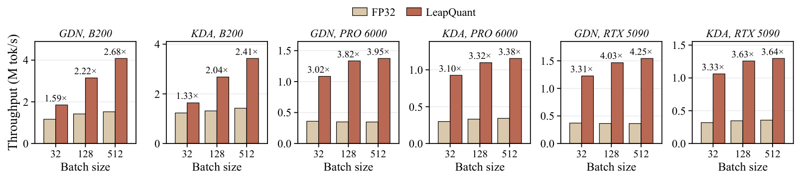
图七的六个面板分别对应两种循环更新和三款设备。柱高是单层内核每秒处理词元数，深色柱相对浅色柱的标注是速度倍率；这里计时范围没有整个模型的前馈、混合专家、标准或稀疏注意力、调度和采样。在最大批量下，门控增量网络在数据中心、专业和消费设备的倍率依次为二点六八、三点九五、四点二五；细粒度门控更新依次为二点四一、三点三八、三点六四。专业和消费设备的相对收益更大，与其循环状态访存更可能成为瓶颈的解释一致。图上同一种设备从小批量到大批量通常增益上升，也符合更大活跃状态集合使访问开销更突出的趋势。
这些面板还显示为何不能把最高四点二五倍写成整模型加速：量化压缩的是注意力循环状态，模型的其余路径没有相应缩短。细粒度门控要处理更多逐键通道信息，虽然与标量门控共享统一表达，记录尺寸和具体算术并不完全一致。批量变大时，原始内核可能更早受到带宽约束，低位宽状态可以继续提高利用率，因此倍率上升不意味着每个请求的延迟按同样比例下降。文中摘要给出的内核平均范围二点零五到三点七，是跨所测配置的聚合表述，与图中的某些峰值也不是同一个统计口径。若实际模型的头数、状态维度、词元调度或布局不同，需要重新测量，不能仅用这些柱高估算吞吐。原图完整保存了各设备对应的横轴批量与纵轴单位，方便把加速卡之间的绝对吞吐和相对收益分开比较；这也是系统论文中将内核优化连接到模型收益之前必须明确的边界。
主文图八的纯解码实验，在数据中心设备、最大批量五百一十二、四千上下文下，五个模型配置的倍率为一点二二到一点三七；专业设备能容纳的最大批量下为一点二二到一点五七。某些模型无法放下五百一十二批量，因此采用二百五十六；三百五十亿参数模型在这个专业设备批量还把上下文由四千降到两千。不同配置不能当作相同上下文的横向竞赛。两个闪速配置只保留八层，因此它们的柱高是缩减模型的解码成本实验。与图七相比明显更小的模型倍率，来自其他层和操作分担时间，也反映优化对象在总计算中的占比。
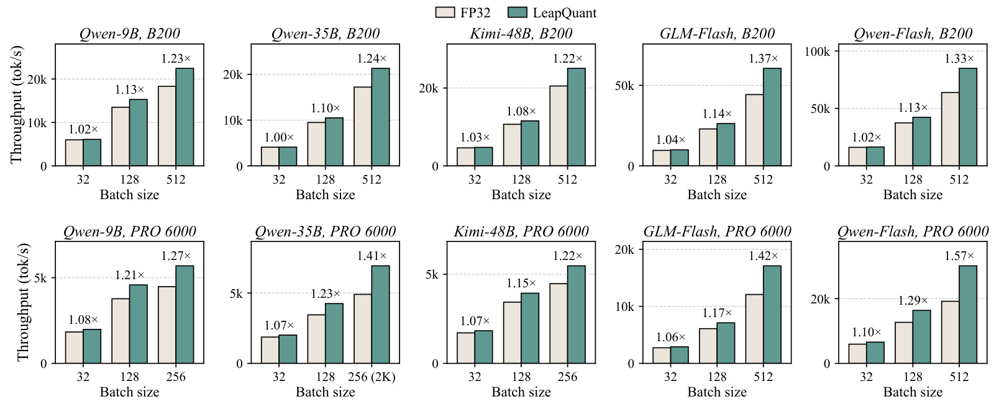
图八在四千上下文下比较五个模型配置的纯解码，横轴按模型和设备给出批量，纵轴为完整解码步骤的词元吞吐。数据中心设备最大批量的倍率在一点二二至一点三七，远低于单层内核的两倍到四倍，说明其余注意力层、前馈和混合专家等操作继续占用每一步。多数小批量只有很小收益，部分配置接近一点零；随着批量提高，循环状态读写的总集合扩大，优化对象在每步时间中的贡献上升。这个图使单层优化到模型解码之间的差距具体可见，不能把端到端数据里较大的扩容收益误当成固定模型步骤本身的同等加速。
下排专业设备的最大可用批量并非统一五百一十二。三个完整模型在部分设置只到二百五十六，三百五十亿参数模型在该批量还使用两千上下文，原图在横轴直接标明。这种为了装入显存而调整的设置必须与倍率一起保留，否则会把容量限制下的不同任务错误比较为相同负载。两个闪速配置在上下排都只有八层，保留了所测层的解码成本，但没有完整模型输出能力；其吞吐柱可以用于分析结构和硬件，不代表用户实际调用完整旗舰模型时每秒生成这么多词元。图中最大批量的一点三七和一点五七等峰值属于所列缩减配置或特定模型设备，不应替换完整模型的统一平均。测量使用启用计算图的服务框架，较强基准有助于避免把框架启动开销改善误算成状态量化收益，但仍然不等于真实线上请求到达与调度。结合前面的内核图和后面的离线端到端图，读者可以分别看到访存改进、模型剩余成本，以及并发容量三种因素，进而为自己的服务选择更接近实际约束的评估口径。
状态边界表示平均每个元素占一点一九字节，包括整数八位残差、平滑尺度和补偿令牌，而单精度状态占四字节，压缩约三点四倍。窗口十六时，一百二十八乘一百二十八状态每头每层需要约八千字节半精度更新缓冲，它只对每个活跃请求分配一次，缓存检查点不都附带一份当前窗口缓冲。论文在默认每千词元检查点的前缀缓存模式中，报告三个完整模型总显存分别减少百分之四十一、五十一、五十六，九十亿参数模型在一张数据中心卡上并发可提高约一点四倍。一点一九字节是边界表示成本，不能把活跃更新缓冲、整个模型权重和其他缓存全部漏掉后宣称整机压缩三点四倍。
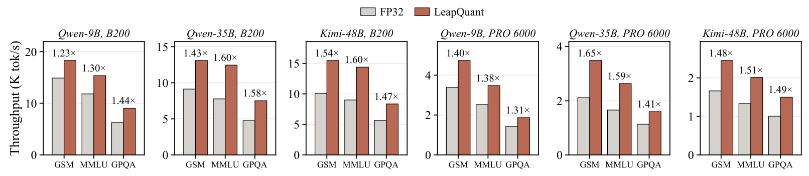
图九把单层优势连接到完整推理服务，选择小学数学、多领域知识和知识问答三类数据集，在两款设备上比较三个完整模型。纵轴是输出词元吞吐，而非只计循环状态更新。数据中心设备上的增益为一点二三到一点六，专业设备为一点三一到一点六五，摘要概括平均端到端收益约一点四七倍。九十亿参数模型在不同任务上的倍率明显不同，表明请求输入输出长度分布、并发数和模型路径共同决定最终收益。三百五十亿参数模型在专业设备的小学数学数据上达到一点六五倍，只能称为这一特定设置的结果，不能替换其他任务或其他硬件的平均值。
作者特别说明，指令模型本来不是长思考模型，为模拟生产细粒度门控模型的工作负载，在端到端实验中使用九十亿参数推理模型的输入输出长度分布。这种做法控制了要模拟的服务形态，但也意味着该面板不是指令模型原始自然输出分布下的服务测量。容量压缩使系统能同时处理更多请求，解码内核也更快，两种效应一起进入柱高；因此图九不能作为固定并发下内核加速的独立证据，更不能拿它推导每个请求首词元延迟下降多少。离线推理把大量请求排队处理，在线系统还受到到达分布、缓存命中、尾延迟约束等因素影响，图中没有提供这些指标。它支持“在所测服务与工作负载中输出吞吐得到改善”，没有声称任何流量环境都可以维持相同倍率。把该图与状态容量、图七内核结果和纯解码实验一起阅读，可以看到系统收益的完整链条：更小的边界状态减少访存并释放缓存空间，调度器能容纳更多活跃请求，最终提高单位时间产出，而不同模型任务上这些环节的贡献并不相同。
附录继续测试上下文增长。密集注意力与线性注意力混合时，普通注意力占比随长度提高，收益有所缩小；完整指令模型在八千上下文、批量五百一十二时仍有一点一八倍纯解码加速。采用稀疏注意力的两个八层闪速配置，在批量二百五十六时，分别测到十二万八千和九万六千上下文；四千时倍率一点二五和一点二三，最长时仍为一点二三和一点二零。它们说明缩减结构的长上下文效率趋势仍存在，不证明两个完整旗舰模型的质量、总容量或实际生产吞吐。作者对未来混合模型长上下文表现的期待属于推断，应与已测事实区分。
3.3 逐组件与超参数消融
作者选择最敏感的数学竞赛和代码生成任务，在九十亿参数模型上逐步加入模块；内核速度以批量二百五十六相对单精度基准报告。这一实验能区分窗口机制的主要恢复作用，以及低秩与平滑继续缩小差距的价值。
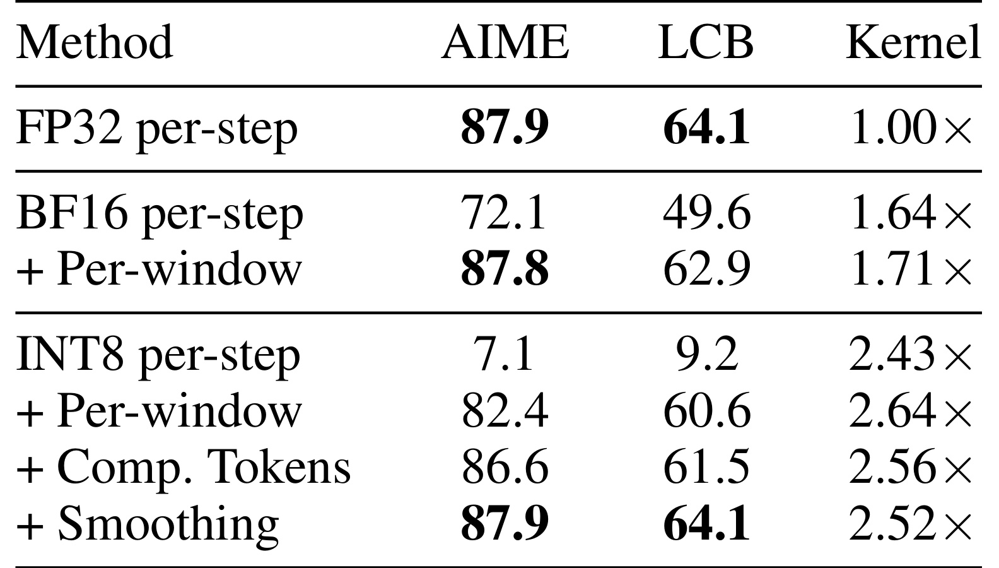
表二最显著的变化来自把逐步整数八位改成按窗口：数学竞赛由百分之七点一跳到八十二点四，代码生成由九点二跳到六十点六。与此同时内核速度从二点四三倍提高到二点六四倍，说明减少边界重建频率不仅帮助准确性，也改善系统效率。这不是只换一个更好的量化尺度，保存更新的时间表示本身就改变了误差注入方式。十六位参考同样受益，数学竞赛由七十二点一恢复到八十七点八，代码生成由四十九点六到六十二点九；它证明小误差的长期累积即使在较高精度下也值得关注，而非整数八位专属问题。
在窗口整数八位的基础上，加入补偿令牌把数学竞赛进一步提高到八十六点六，代码生成到六十一点五；再加入平滑分别恢复到八十七点九与六十四点一，与单精度相同。内核倍率对应由二点六四到二点五六，再到二点五二。这样的变化呈现清晰代价：后两个模块用少量附加工作换取最终准确性，完整配置没有保留最便宜变体的最高速度，但仍显著快于基准。表格的逐层加入顺序是论文实际方法顺序，不能把增量理解成三种互不相干方法的随机比较。该表也没有穷尽所有模块组合，因此无法严格量化没有窗口情况下补偿或平滑各自的收益，或者它们在其他模型上的独立因果效果。它证明在选定顺序、固定模型任务与批量下，三个组成部分共同把速度和质量推到更好的位置。对于复现实验，首先应重现窗口后的大幅恢复，再检验低秩补偿与尺度平滑带来的较小提升；如果第一步仍塌陷，优先核对真实校正记录和累计门控，而不是增加补偿个数掩盖表示错误。
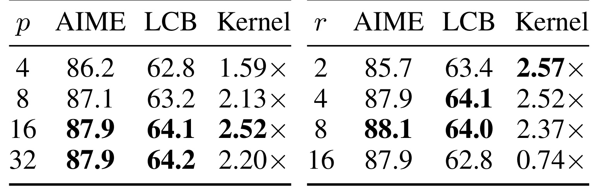
表三左侧固定四个补偿令牌，将窗口从四扩大到八、十六、三十二。数学竞赛从八十六点二提高到八十七点一，再到八十七点九并基本饱和；代码生成也在十六附近达到基准。内核倍率从一点五九到二点一三、二点五二，然后在三十二下降为二点二零。更长窗口虽然舍入更少，却需要每一步读取更多历史记录，占用更多共享存储资源，并影响流水线并行空间。准确率不再增加时，继续扩大窗口只能增加代价；这个结果让默认十六成为一个经过任务和硬件验证的折中，而不是理论上必然最优的常数。
右侧固定窗口十六，把补偿个数从二增到四、八、十六。二个时数学竞赛八十五点七、代码六十三点四，四个时恢复到八十七点九与六十四点一；八个仅使数学分数到八十八点一，代码六十四，已经没有稳定的全面提升。速度却从二点五七、二点五二降到二点三七，到十六个时只有零点七四倍，比单精度基准更慢，代码分数还降到六十二点八。小秩时拟合和重建可与访存重叠，大秩时这些算术暴露出来，因而不能假设“多留一些高精度方向一定更好”。右边不是在证明低秩补偿越多准确率越差，而是展示在当前设置下收益饱和和效率代价；分数轻微波动也不能过度解读。四位配置采用八个补偿，是另一位宽的准确性压力选择，不能用八位甜点直接取消它。两侧合起来说明窗口和秩数都要围绕量化误差、记录长度与硬件资源联合调节，服务结构变化后应重新测量，而不把本文默认配置当成所有状态维度的通用最优解。
4. 总结
LeapQuant的贡献在于把循环状态看成“固定边界表示加已经发生的高精度更新”，从而改变舍入进入递推的时间位置。窗口只量化一次，避免小更新每步反复被截断；补偿令牌保留主要低秩结构，并沿现有秩一记录路径参与读出；残差平滑按键行重新分配量化分辨率。这三个环节的代数关系明确，能够同时说明为何准确性恢复，以及何处仍然会产生访存、缓冲和边界拟合成本。最有力的经验结论是八位配置在三个完整模型、十二组任务上平均达到单精度基准，并在两种循环更新和多款硬件上取得内核与离线服务收益。
局限首先来自精度适用范围。八位结果接近基准，不代表输出逐样本相同，也不代表严格的误差界。六位平均已有退化，四位在长推理模型上明显降分，因此“无损”只能在具体位宽、模型和任务集合下理解。其次，低秩结构与尺度统计随层、头、上下文变化，作者展示的单头幅度案例和总体奇异值观察不足以保证所有架构都同样适合少量补偿；如果状态结构不再集中，追加补偿会引入新的计算代价。第三，两个更新的闪速模型是八层缩减版本，只用于效率，不保留原始输出；其长上下文曲线不能作为完整模型上线证明。第四，端到端吞吐来自离线工作负载且包含可扩容并发，指令模型还借用了另一模型的长度分布，这与真实请求到达、在线尾延迟和缓存命中行为仍有距离。
还有系统层面的边界需要保留。边界状态平均一点一九字节包含残差与补偿元数据，但活跃窗口记录另有约八千字节每头每层成本。缓存检查点是否大量存在、检查点间隔和复用率如何，会影响整机节省显存的幅度。模型如果很少保存前缀，容量收益就可能较小；窗口变大或者补偿变多，也可能让解码资源使用恶化。附录误差推导固定层输入和更新系数，不能独自覆盖自由生成的全部反馈。因此部署评估应同时保留数学表示核对、整段生成质量和服务计时，单独验证稠密状态重建误差远远不够。
后续值得跟进的第一项，是在保持完整层数的新模型上复现八位精度与长上下文效率，特别检查长思考和代码任务，并报告置信区间及生成长度差异。第二项，是把固定并发的纯解码收益和允许扩大并发的容量收益分开测试，记录首词元、词元间和尾部延迟，而非只公布吞吐倍率。第三项，是在不同状态维度、门控形式和缓存策略上重选窗口及补偿个数，核对活跃记录和缓存检查点的总预算，避免过大秩数让内核退化。第四项，是等待官方实现或独立复现，检查尺度坐标、校正记录精度、边界重拟合和异常请求生命周期的处理；当前没有核验到独立官方代码入口，不能将论文的实现描述视为已验证的可直接安装组件。
对研究与工程阅读而言，这篇工作的可迁移思路是：当被量化对象既是记忆又是下一步更新输入时，应先分析误差被再次注入的路径，再优化单次量化器。循环矩阵和普通只写一次的缓存有不同的误差传播机制，窗口高精度更新与边界低位宽表示提供了一种处理方式。是否适合具体服务，仍应由目标模型的生成质量、状态结构、并发形态和实际硬件测量决定。